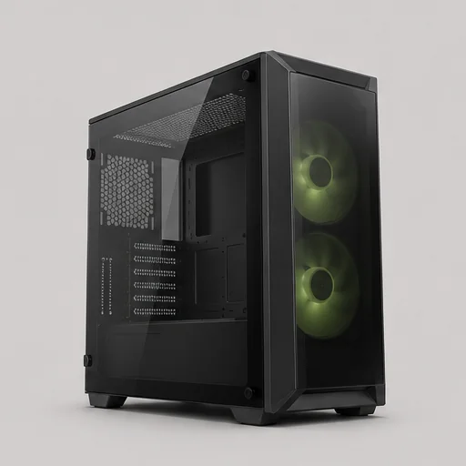

Was kostet ein guter Gaming-PC – mit allem, was du brauchst?
Wenn zum Rechner noch ein Monitor oder eine Windows-Lizenz dazukommt, fällt der Kauf teurer aus als der Preis auf der Produktseite. Zieh zuerst ab, was du für Zubehör und Extras ausgeben musst. Dann weißt du, wie viel vom Budget für den PC übrig bleibt.

Welche Spiele soll der PC schaffen?
Wie viel ein guter Gaming-PC kostet, hängt davon ab, was du spielen willst und welchen Monitor du nutzt. Wer ältere Spiele in Full HD spielt, braucht meist weniger Grafikleistung als jemand, der neue Titel mit hohen Details und höherer Auflösung spielen möchte.
Wenn du bis zu 1.000 Euro für den Rechner hast, beginn mit Angeboten in dieser Preisklasse. Schau bei jedem PC, wie er in den Spielen abschneidet, die dir wichtig sind. Dafür helfen Tests mit derselben Auflösung wie an deinem Monitor. Bei schnellen Multiplayer-Spielen kann dir eine hohe Bildrate besonders wichtig sein.
Mit ein paar konkreten Spielen und der Auflösung deines Monitors kannst du einen günstigen PC deutlich besser einschätzen. Wenn das Bild in den gewünschten Einstellungen schon flüssig ist, musst du dafür kein größeres Budget einplanen.
Diese Preisbereiche helfen bei der Suche
Die Preisklassen helfen dir, die Auswahl einzugrenzen. Innerhalb einer Klasse lohnt sich der Blick auf die Ausstattung trotzdem. Gerade bei günstigen PCs machen eine kleine SSD, ältere Bauteile oder eine fehlende Windows-Lizenz im Alltag und beim Gesamtpreis einen Unterschied.
| Budget für den Rechner | Darauf kommt es beim Vergleich an |
|---|---|
| Bis 1.000 Euro | Passt die Grafikleistung zu meinen Spielen? Sind Windows und genügend Speicherplatz enthalten? |
| 1.000 bis 1.500 Euro | Bekomme ich spürbar mehr Spieleleistung oder vor allem zusätzliche Ausstattung? |
| 1.500 bis 2.000 Euro | Nutze ich die Mehrleistung an meinem Monitor? Wie sind Kühlung, Lautstärke und Erweiterbarkeit? |
| Über 2.000 Euro | Welchen konkreten Anspruch erfüllt der teure Rechner, den günstigere Alternativen nicht erfüllen? |
Bei einem kleineren Budget kannst du auch nach gebrauchten oder aufbereiteten PCs schauen. Prüfe dabei neben den Teilen auch den Zustand und den Verkäufer. Ein guter Gebrauchtpreis hilft dir vor allem dann, wenn der PC deine Spiele noch ordentlich packt.
Der Tower ist nur ein Teil der Rechnung
Wenn du zum ersten Mal einen Gaming-PC kaufst, schau, welches Zubehör du schon hast. Einen Monitor, eine Tastatur oder eine Maus kannst du vielleicht weiterverwenden. Neue Kopfhörer oder ein WLAN-Adapter gehören dagegen ins Budget, wenn du sie fürs Setup noch brauchst.
Schau auch in die Angaben zu Windows. Falls das Angebot nur „vorinstalliert“ sagt, frag nach, ob eine Lizenz dabei ist. Wenn du sie extra kaufen musst, zählt sie zum Gesamtpreis.
Angenommen, du hast insgesamt 1.200 Euro eingeplant und brauchst davon 200 Euro für Zubehör und 50 Euro als Puffer. Für den Rechner bleiben dann 950 Euro. Die Rechnung kannst du mit den Preisen für dein eigenes Zubehör wiederholen.
Geh zum Schluss bis zum Warenkorb. Dort siehst du, ob der Rechner auch mit Versand und den ausgewählten Extras noch innerhalb deiner Preisgrenze liegt.
Wo ein Aufpreis etwas bringt
Wenn dein Lieblingsspiel bei den gewünschten Einstellungen ruckelt, kann eine schnellere Grafikkarte einen Aufpreis wert sein. Wenn deine Spiele schon gut laufen und du immer wieder für ein neues Spiel ein altes löschen musst, bringt dir eine größere SSD mehr. Beim RAM lohnt sich der Aufpreis vor allem, wenn Spiele und Programme zusammen den vorhandenen Arbeitsspeicher ausreizen.
Wenn das Budget knapp ist, steck es zuerst in das Teil, das du beim Spielen oder im Alltag wirklich brauchst. Für ein besonderes Gehäuse oder Beleuchtung kannst du danach entscheiden, wie viel dir die Optik wert ist. Beispiele findest du in Welche PC-Aufpreise lohnen sich?
Vielleicht reicht eine kleinere Anschaffung
Wenn dein jetziger Rechner bis auf ein volles Laufwerk gut funktioniert, kann eine zweite SSD schon reichen. Falls du noch nicht weißt, was beim PC bremst, hilft dir RAM oder SSD aufrüsten? bei der ersten Suche.
Brauchst du doch einen neuen PC, kannst du eine eigene Teileliste mit einem Fertig-PC vergleichen. Rechne bei beiden Varianten Versand und benötigte Software mit ein. So lässt sich abwägen, ob dir der Fertig-PC mit Montage und Support den Preisunterschied wert ist.
Wenn deine Preisgrenze feststeht, such in den PCScout-Preiskategorien nach Rechnern, die darunterliegen. Dann siehst du, welche Ausstattung du für dein Budget bekommst und ob dir bei einem teureren Modell ein konkreter Vorteil auffällt.